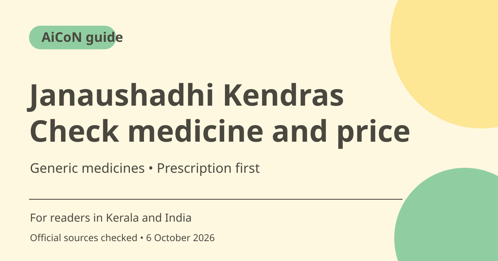

Janaushadhi Kendras: find generic medicines and check costs
Janaushadhi Kendras sell lower-cost generic medicines through a government scheme. Check the official product list and a nearby Kendra, then ask your doctor or pharmacist whether the available medicine matches your prescription. Lower price is not a reason to change treatment on your own.

What is the scheme?
Pradhan Mantri Bhartiya Janaushadhi Pariyojana is run through dedicated Kendras, with procurement, supply and marketing coordinated by PMBI under the Department of Pharmaceuticals. The official FAQ describes quality generic medicines at prices below branded counterparts. This guide is about accessing the scheme, not diagnosing illness or choosing a medicine for you.
What is a generic medicine?
PMBI describes generic medicines as marketed under non-proprietary or approved names rather than brand names. Its FAQ states that the supplied generic medicines have the same efficacy and therapeutic value as branded medicines. That does not let you assume that two packs with similar names are the same formulation, strength or dosage form.
How quality is described
The official FAQ says every procured batch is tested by empanelled NABL laboratories against required standards before supply through the network. This is the scheme's stated quality process. For your purchase, check the medicine, packaging, expiry and bill with the pharmacist. If a pack seems wrong or damaged, seek advice rather than taking it because it came from a scheme outlet.
How to find a Kendra in Kerala
Use the current official site's Locate PMBJP Kendra option and filter or search your state and district as offered. A national directory entry is not live proof of opening hours, stock or the exact price of a pack in that shop. Confirm those practical details before travelling, especially for a repeat prescription or a medicine needed urgently.
Savings and stock are medicine-specific
Use the official Product & MRP List to compare the exact generic name, strength and unit size. Do not compare a strip price with a different pack size or assume the same percentage saving for every drug. A product listed nationally is not necessarily on the shelf at the nearest Kendra. This guide avoids a stale national shop count and a blanket personal saving promise.
Opening a Kendra is a different task
The FAQ lists categories such as entrepreneurs, partnerships and organisations, with requirements including premises, a retail drug licence, a pharmacist and financial capacity. Use Apply for Kendra for current guidelines. Do not pay an unverified person who promises a licence or incentive, and do not treat a public scheme description as approval of your application.
How to use it, step by step
- Open janaushadhi.gov.in directly and use its current Kendra locator or linked official access options.
- Select Kerala and your district, or the relevant state and area. Check the specific outlet details before travelling.
- Keep your prescription and identify the exact medicine name, strength, dosage form and pack size with your doctor or pharmacist.
- Look up the Product & MRP List and compare like-for-like packs. Treat an incomplete search result as unverified, not proof a medicine is unavailable everywhere.
- Ask the Kendra about current stock and pack price. Do not change dosage or substitute a different combination on your own.
- Check packaging, expiry and the bill before accepting the medicine.
- For opening a Kendra, read current Apply for Kendra guidelines separately and verify licensing, pharmacist and premises requirements.
Cost, eligibility and limits
| Medicine cost | Use the current official MRP list and the actual pack at the outlet. Savings vary by medicine and pack. |
|---|---|
| Stock | National product-list presence does not guarantee local stock. Confirm with the Kendra. |
| Treatment | Ask a doctor or pharmacist about a proposed equivalent. Keep prescription requirements and treatment advice. |
| Kendra application | Eligibility, drug licensing, pharmacist, premises and financial requirements apply. No application or incentive approval is promised. |
Frequently asked questions
Can I change a prescribed drug because another is cheaper?
Ask your doctor or pharmacist to confirm the medicine, strength and formulation. Do not change treatment yourself.
Does the national list guarantee stock near me?
No. Confirm the exact pack with the outlet before travelling.
Can anyone immediately open a Kendra?
No. The scheme has application, premises, pharmacist and drug-licensing requirements.
Official sources
Checked 6 October 2026. Features and prices can change. This is a guide, not a personal product test.